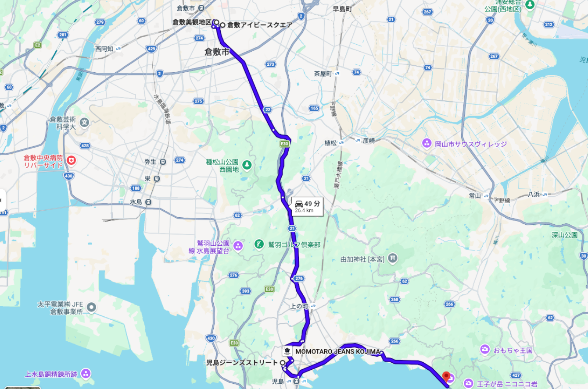

祝新婚
TRAVEL ITINERARY — OKAYAMA
旅のしおり岡山編
長野編
HOME
DAY1
DAY2
DAY3
DAY4
概要
Destination
岡山県 倉敷・児島
Date
2026年9月19日(土) 〜 9月22日(火・祝)
Member
Shohey & Misa
Sightseeing
周辺の観光情報
Hotel
倉敷アイビースクエア
DENIM HOSTEL float
ルートマップ

①倉敷アイビースクエア
岡山県倉敷市本町7-2
②美観地区
岡山県倉敷市中央4
③児島ジーンズストリート
岡山県倉敷市児島味野2丁目5
④DENIM HOSTEL float
岡山県倉敷市児島唐琴町1421-26
近隣の病院
①赤松病院
岡山県倉敷市老松町３丁目１０−３２
②宮尾産婦人科クリニック
岡山県倉敷市老松町４丁目５−１３
③清水レディスクリニック
岡山県倉敷市児島駅前４丁目９２
④倉敷市立市民病院
岡山県倉敷市児島駅前２丁目３９-26